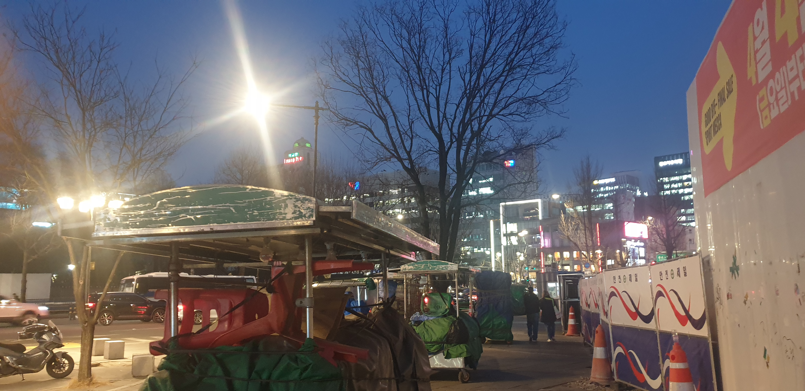

Narrative Script
도시가 푸른 빛에 잠기는 시간, 블루 아워가 시작됩니다.
식어가는 황혼 아래, 앙상한 겨울 나뭇가지들이 짙은 인디고색 하늘을 배경으로 섬세한 실루엣을 그려냅니다.
길가에는 세월의 흔적이 묻은 초록색 천막의 포장마차들이 자리를 잡고 있습니다. 곧 들이닥칠 저녁 인파를 기다리는, 무심하고도 익숙한 도시의 풍경입니다.
어둠을 가르는 강렬한 가로등 하나가 눈부신 빛의 줄기를 뿜어내고, 그 빛은 포장마차의 차가운 금속 프레임에 부딪혀 날카롭게 반사됩니다. 그 옆으로는 선명한 주황색 라바콘과 알록달록한 공사 가림막들이 빨강, 하양, 파랑의 리듬을 만들며 보행로와 작업 공간을 경계 짓습니다.
저 멀리 고층 빌딩의 창문에서 새어 나오는 부드운 불빛과 네온사인은 이 거대한 도시의 박동이 멈추지 않았음을 속삭입니다. 인도 위, 그림자 속을 조용히 지나는 사람들 사이로 낮게 깔리는 차 소리와 헤드라이트의 잔상이 시각적인 리듬을 더합니다.
본격적인 밤의 활기가 깨어나기 전, 거친 일상의 현장 속에 깃든 짧은 정적. 이것은 도시가 다시 움직이기 위해 숨을 고르는, 치열하고도 고요한 기다림의 순간입니다.
Audio Narration
The Korean descriptive script has been converted into an audio narration.